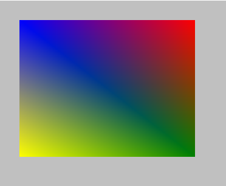

Dibuja un rectángulo con los colores dados.
Síntaxis
draw_rectangle_colour(x1, y1, x2, y2, col1, col2, col3, col4, outline);
Argumentos
| Argumento | Descripción |
|---|---|
| x1 | La posición horizontal del primer punto del rectángulo |
| y1 | La posición vertical del primer punto del rectángulo |
| x2 | La posición horizontal del segundo punto del rectángulo. |
| y2 | La posición vertical del segundo punto del rectángulo. |
| col1 | El color de la ezquina superior izquierda del rectángulo. |
| col2 | El color de la ezquina superior derecha del rectángulo. |
| col3 | El color de la ezquina inferior derecha del rectángulo. |
| col4 | El color de la ezquina inferior izquierda del rectángulo. |
| ouline. | ¿Dibujar sólo el borde del rectángulo (true), o el rectángulo rellenado (false)? |
Descripción
Esta función permite dibujar un rectángulo definiendo el punto perteneciente a la ezquina superior izquierda (x1, y1) y el punto perteneciente a la ezquina inferior derecha (x2, y2). Los colores argumentados tienen prioridad sobre
draw_set_colour(), por lo que el color definido por esta función será ignorado.Devuelve
Nada.
Ejemplo
draw_rectangle_colour(
32, 32,
320, 256,
c_blue, c_red,
c_green, c_yellow,
false
);
Se dibuja un rectángulo relleno en las coordenadas dadas, con una apariencia similar a ésta:
